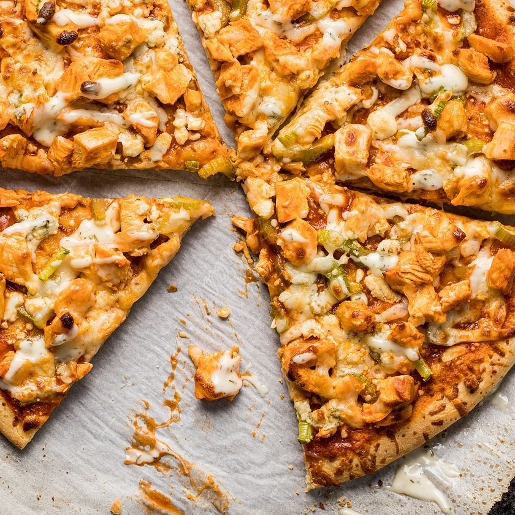

Buffalo Chicken Pizza

Buffalo Chicken Pizza is great for people who love buffalo wings and pizza. There are a few different styles/ways you can make this pizza. My favorite is replacing the tomato sauce with ranch and mozzerella for the cheese. Then you add chicken, bacon, and onions. Lastly you add a swirl of buffalo sauce on top (the swirl is optional). You may also add other toppings! Such as the picture above, which has green peppers. You may also add things like different, like blue cheese, or other garnishes.
Ingredients
- Any pizza pie crust
- Ranch for sauce (can be replaced)
- Mozerrella Cheese
- Chicken Poppers
- Chopped Onions (optional)
- Bacon Bits (optional)
- Buffalo Sauce
Steps
- Pre-heat oven to 400°F.
- Prep pizza dough for crust, toss and shape.
- Spread ranch evenly on prepared dough.
- Chop onions thinly but not diced.
- If you're not using pre-cooked chicken poppers or bacon bits you will want to cook those slightly before adding them in (don't cook all the way as they will get burned or over cooked in the oven).
- Spread mozzerella cheese covering ranch.
- Add toppings.
- Bake for 20-25 (or until crust is golden brown).
- Enjoy your pizza